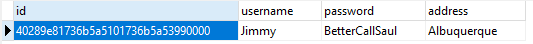
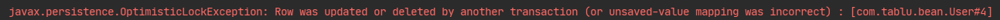
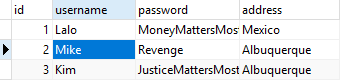
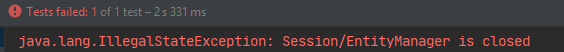

Hibernate学习（二） 今天主要学习Hibernate的对象状态、缓存以及事务操作。
实体类规则
属性私有
有get和set方法
有属性作为唯一值
用基本数据类型的包装类
主键生成策略 native 根据底层数据库自动生成表示符的能力来选择identity, sequence, hilo，跨数据库平台开发。
uuid 也适用于代理主键，但是占空间，这种策略并不流行。
配置映射文件 在实体类映射User.hbm.xml里面加上主键生成策略
1 2 3 4 5 6 <id name ="uuid" column ="id" > <generator class ="uuid" /> </id >
修改实体类 注意这里的uuid类型必须是字符串
1 2 3 4 5 6 7 8 public class User private String uuid; private String username; private String password; private String address; ... }
测试uuid效果 1 2 3 4 5 6 7 8 9 10 11 12 13 14 15 16 17 18 19 20 21 public class HibernateTest @Test public void testInsert () SessionFactory factory = SessionFactoryUtil.getSessionFactory(); Session session = factory.openSession(); Transaction transaction = session.beginTransaction(); User user = new User(); user.setUsername("Jimmy" ); user.setPassword("BetterCallSaul" ); user.setAddress("Albuquerque" ); session.save(user); transaction.commit(); session.close(); factory.close(); } }
结果如下：

从图中可以看到hibernate主键自动生成了uuid，真的很长一串。
CRUD操作 将主键生成策略改为native，实体类id设置为Integer，删除原表，然后进行crud测试。
1 2 3 4 5 6 7 8 9 10 11 12 13 14 15 16 17 18 19 20 public class HibernateCrud private SessionFactory sessionFactory; private Session session; private Transaction tx; @Before public void init () sessionFactory = SessionFactoryUtil.getSessionFactory(); session = sessionFactory.openSession(); tx = session.beginTransaction(); } @After public void destroy () tx.commit(); session.close(); } }
此处为了方便测试，加了before和after注解。
增 1 2 3 4 5 6 7 8 9 @Test public void testInsert () User user = new User(); user.setUsername("Lalo" ); user.setPassword("MoneyMattersMost" ); user.setAddress("Mexico" ); session.save(user); }
这里其实可以用saveOrUpdate()，具体知识会在Hibernate对象状态中说明。
查 1 2 3 4 5 6 @Test public void testGet () User user = session.get(User.class , 1) ; System.out.println(user); }
改 1 2 3 4 5 6 7 @Test public void testUpdate () User user = session.get(User.class , 2) ; user.setUsername("Gustavo" ); session.update(user); }
修改方法不会返回值，比如0、1，我猜既然能看到SQL语句就证明成功，因此不用多此一举。
删 1 2 3 4 5 6 @Test public void testDelete () User user = session.get(User.class , 2) ; session.delete(user); }
删除方法没有deleteById()这种，因为Hibernate本质上是用Session在管理对象。
实体类对象状态
瞬时态(Transient)
持久态(Persistent)
托管态/游离态(Detached)瞬时态 1 2 3 4 5 6 User user = new User(); user.setUsername("Kim" ); user.setPassword("LoveJimmy" ); user.setAddress("Albuquerque" ); session.saveOrUpdate(user);
持久态 1 2 3 4 5 User user = session.get(User.class , 3) ; System.out.println(user); user.setPassword("JusticeMattersMost" );
托管态 1 2 3 4 5 6 7 User user = new User(); user.setId(4 ); user.setUsername("Mike" ); user.setPassword("Revenge" ); user.setAddress("Albuquerque" ); session.saveOrUpdate(user);


Hibernate缓存 缓存即把数据放进内存，提高读取效率。
一级缓存
Hibernate一级缓存默认打开。
一级缓存范围为Session管理范围，即session创建到关闭。
一级缓存中的存储数据是持久态数据。验证一级缓存 查询两次，打断点并通过dubug方式进入，看控制台是否发送SQL语句。1 2 3 4 5 6 7 8 9 @Test public void testCache () User user1 = session.get(User.class , 1) ; System.out.println(user1); User user2 = session.get(User.class , 1) ; System.out.println(user2); System.out.println(user1.equals(user2)); }
1 2 User user = session.get(User.class , 1) ; user.setUsername("Heisenberg" );
二级缓存 可以用非关系型数据库NoSQL替代，如redis，所以Hibernate二级缓存已经不使用了。
事务操作 规范代码书写
1 2 3 4 5 6 7 8 9 10 11 12 13 14 15 16 17 18 19 20 21 22 23 24 25 26 27 28 29 30 31 public class HibernateTx private SessionFactory sessionFactory; private Session session; private Transaction tx; @Test public void testTx () try { sessionFactory = SessionFactoryUtil.getSessionFactory(); session = sessionFactory.openSession(); tx = session.beginTransaction(); User user = new User(); user.setUsername("Kim" ); user.setPassword("LoveJimmy" ); user.setAddress("Albuquerque" ); session.saveOrUpdate(user); int i = 1 /0 ; tx.commit(); } catch (Exception e) { e.printStackTrace(); tx.rollback(); } finally { session.close(); sessionFactory.close(); } } }
这里很郁闷的是明明程序有异常，却没有事务回滚，数据会插入成功。原来我在配置核心文件hibernate.cfg.xml时，方言选择了org.hibernate.dialect.MySQL5Dialect，而不是所有的表类型都支持事务，MySQL的表是有事务安全( InnoDB)和非事务安全(MyISAM)之分的，MySQL5.5及以后使用InnoDB作为默认引擎。
1 2 <property name ="hibernate.dialect" > org.hibernate.dialect.MySQL55Dialect</property >
修改之后，出现异常，事务成功回滚，并不会持久化到MySQL数据库。注意MySQL5InnoDBDialect过时了。
Hibernate绑定Session 当出现并行访问的时候，最好确定唯一Session，可以将其和本地线程绑定。
修改核心配置文件 1 2 <property name ="hibernate.current_session_context_class" > thread</property >
修改SessionFactoryUtil工具类 1 2 3 4 5 6 7 8 9 10 11 12 13 14 15 16 17 18 19 public class SessionFactoryUtil private static SessionFactory sessionFactory; static { Configuration cfg = new Configuration(); cfg.configure(); sessionFactory = cfg.buildSessionFactory(); System.out.println("init SessionFactory...." ); } public static SessionFactory getSessionFactory () return sessionFactory; } public static Session getSession () return getSessionFactory().getCurrentSession(); } }
测试 1 2 3 4 5 6 7 8 9 10 11 12 13 14 15 16 17 18 19 20 21 22 23 24 25 26 27 public class HibernateThread private Session session; private Transaction tx; @Test public void testThreadLocal () session = SessionFactoryUtil.getSession(); try { tx = session.beginTransaction(); User user = new User(); user.setUsername("Kim" ); user.setPassword("LoveJimmy" ); user.setAddress("Albuquerque" ); session.save(user); tx.commit(); } catch (Exception e) { e.printStackTrace(); tx.rollback(); } finally { } User user = session.get(User.class , 1) ; System.out.println(user); } }
这里会报错，因为随着线程结束，Session也关闭了，自然无法再调用get方法。

API-查询所有 这里用到Hibernate的Query对象
1 2 3 4 5 6 7 8 9 10 11 12 13 14 15 16 17 18 19 20 21 22 23 24 25 26 27 28 29 30 31 32 33 34 public class HqlFindAll private SessionFactory sessionFactory; private Session session; private Transaction tx; @Before public void init () sessionFactory = SessionFactoryUtil.getSessionFactory(); session = sessionFactory.openSession(); tx = session.beginTransaction(); } @Test public void testFindAll () try { Query<User> from_user = session.createQuery("from User" , User.class ) ; List<User> users = from_user.list(); for (Object user : users) { System.out.println(user); } tx.commit(); } catch (Exception e) { e.printStackTrace(); tx.rollback(); } finally { session.close(); sessionFactory.close(); } } }
createQuery方法里传入的参数”from User”就是hql (hibernate query language)语句，非常简单，它用来操作实体类和属性。